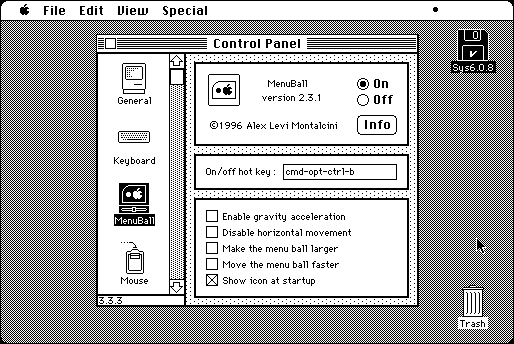

Download
menu-ball-231.zip (25K) MenuBall 2.3.1 repackaged into a zipped hfs disk image and checksum file. The disk image can be mounted with Mini vMac.
menu-ball-231.hqx (29K) MenuBall 2.3.1 in the original format.
copyright: Alessandro Levi Montalcini
mod date: Jul 3, 1996
license: Freeware
last known url
(gone)
Puts “a bouncing ball in your menu bar.” It is “absolutely useless”, except that “since the ball moves one step at each WaitNextEvent call, you can use it to monitor the system activity.”

If you find these downloads useful, please consider helping the Gryphel Project, which hosts them.
Here are the md5 checksums for the downloads, signed with Gryphel Key 5:
--------- GRY SIGNED TEXT --------- 91bd14e5f287bb61d0693cd64c12c96c menu-ball-231.zip e88a09a140deb761ef317ac1a2f7de7e menu-ball-231.hqx ------- BEGIN GRY SIGNATURE ------- Gry/4Xa8CFcUzxdN/GY1V1rlBPV0+j24992usD6mGywrHFUPqYbTDoSUWrBWEM9m bO1pOe4FDUTWjqkMXVSsPCBFespppArmNrsAIAXPhszitqBCXTgrndkjWGw4N4hY kq+ToPx3TFkt7Lpw3iDVnBorMhKeUaujqicu8AccjTNAfI8nMaM7XtOClqAbE7OD -------- END GRY SIGNATURE --------